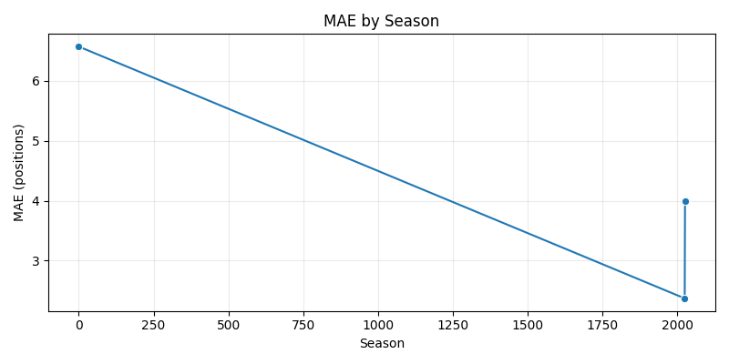
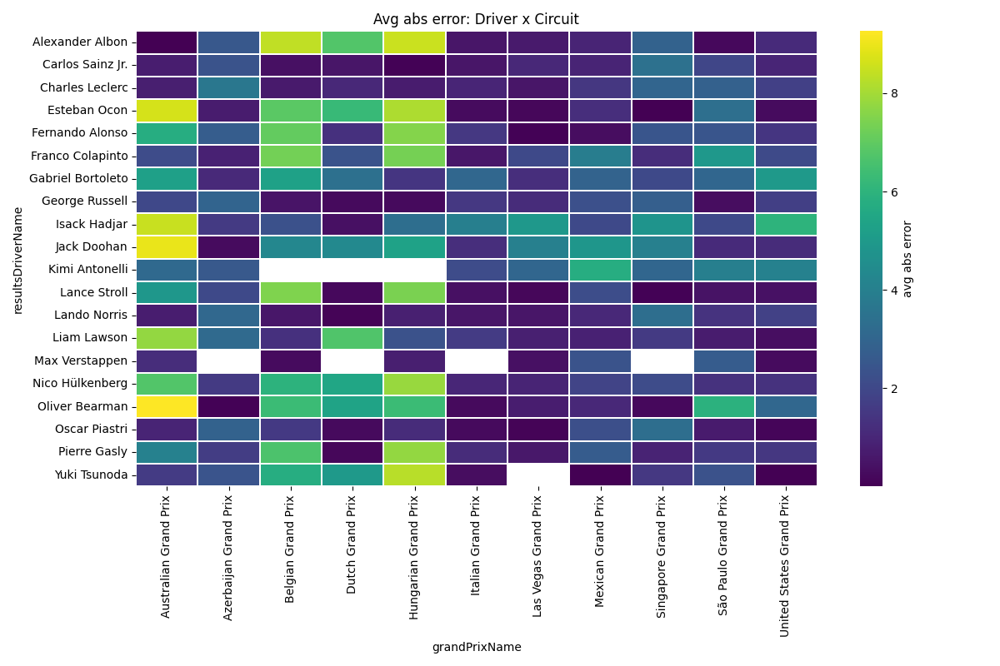
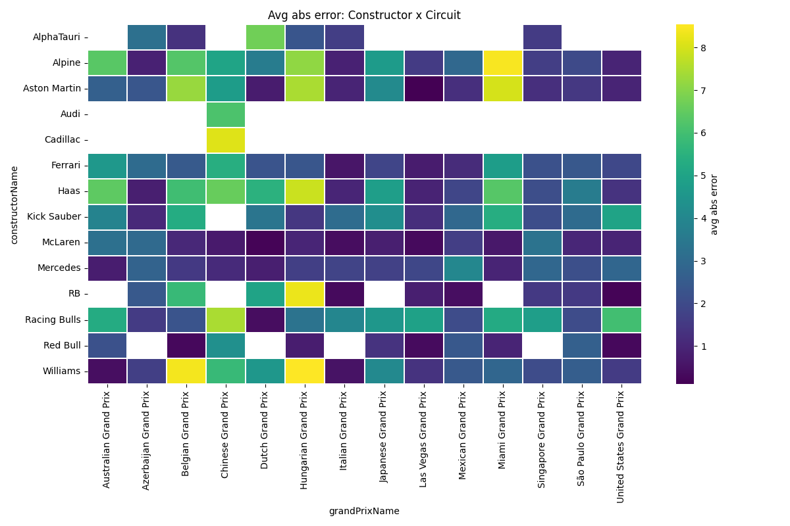

Position Group Analysis
Generated: 2026-02-12 02:49:30 +0000
MAE by Season
Confidence intervals (driver+circuit)
Notes: How to read the heatmaps
The heatmaps show the average absolute error (in finishing positions) aggregated for the intersection of the row (driver or constructor) and the column (circuit).
- Color scale: darker/warmer colors indicate larger average absolute error.
- Rows: drivers (top 20 by race count) or constructors.
- Columns: circuits (circuit names).
- Missing cells: blank or neutral color means insufficient data (no races for that pair).
- Sample size: per-driver/circuit averages use all available races; confidence intervals are empirical percentiles computed only when a group has at least 5 residuals.
Driver x Circuit heatmap
Constructor x Circuit heatmap
